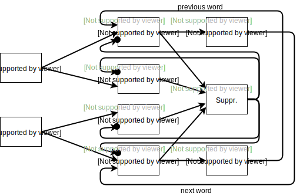
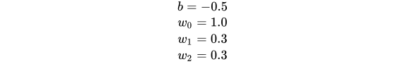
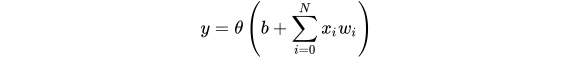
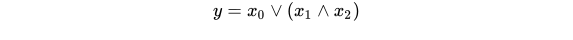
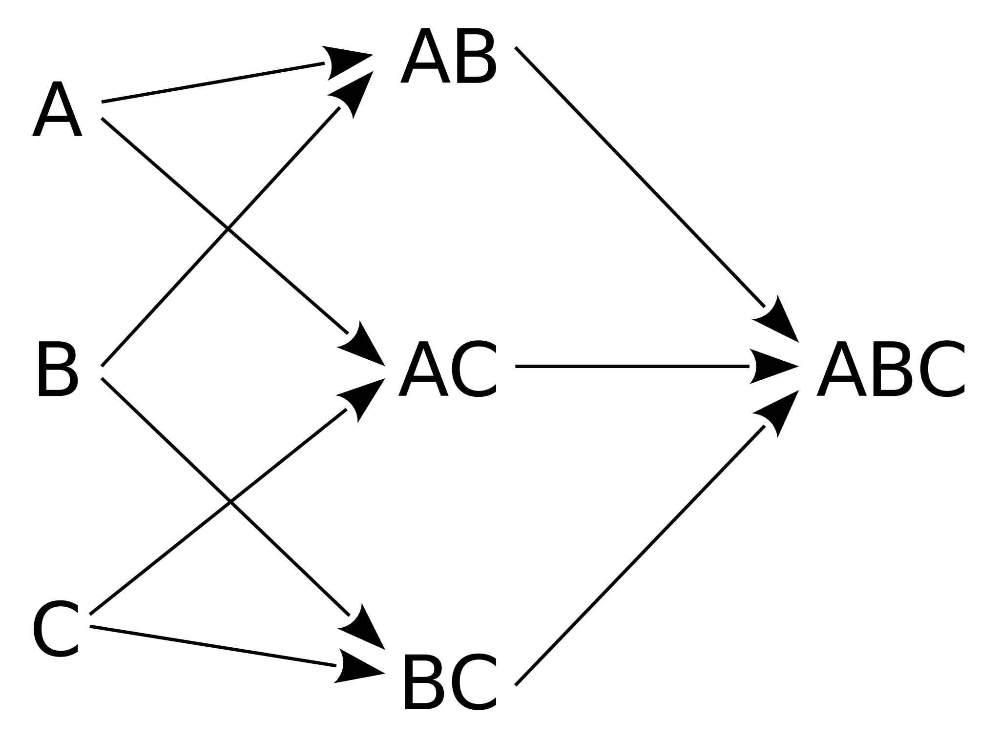

How it works
The Neural Network
At the heart, Aika is a neural network simulation algorithm. It uses neurons to represent a wide variety of linguistic concepts and information and connects them via synapses. In contrast to most other neural network architectures, Aika does not employ layers to structure its network. Synapses can connect arbitrary neurons with each other, but the network is not fully connected either. As with other artificial neural networks these synapses are weighted. By choosing the weights and bias accordingly neurons can take on the characteristics of boolean logic gates such as an and-gate or an or-gate. To compute the activation value of a neuron, the weighted sum over its input synapses is computed. Then a bias value is added to this sum and the result is sent through an activation function. In Aika this activation function is chosen in a way that it clearly distinguishes between active neurons and inactive neurons. Only activated neurons are processed. These activations are expressed not only by a real valued number but also by an activation object.
Activations
The advantage of these activation objects is that, through them, we are able to cope with the relational structure of natural language text by making the activation relate to a specific segment of text. In a way these activations can be seen as text annotations that specify a start character and an end character or the word position (relational id). Words, phrases and sentences are in a relation to each other through their sequential order. The assignment of text ranges and word positions to activations is a simple yet powerful representation of the relational structure of text and avoids some of the shortcomings of other representations such as bag of words or sliding window. Since these activations are propagated along through the network, synapses need to be able to manipulate the text range and the word position while the activation is passed on to the next neuron.
Interpretations
One common problem when processing text is that of cyclic dependencies. In the example 'jackson cook' it is impossible to decide which word has to be resolved first, the forename or the surname, since both depend on each other. The word jackson can be recognized as a forename when the next word is a surname and the word cook can be recognized as a surname when the previous word is a forename. To tackle this problem Aika employs non-monotonic logic and is therefore able to derive interpretations that are mutually exclusive. These interpretations are then weighted and only the strongest interpretation is returned as the result. Consider the following network as an example, in which the different linguistic concepts are represented by individual neurons.

This network is able to determine whether a word, which has been recognized in a text, is a forename, surname, city name, or profession. If for instance the word "jackson" has been recognized in a text, it will trigger further activations in the two jackson entity neurons. Since both are connected through the suppressing neuron only one of them can be active in the end. Aika will therefore generate two interpretations. But these interpretations are not limited to a single neuron. For instance if the word neuron cook gets activated too, then the jackson forename entity and the cook surname entity will be part of the same interpretation. The forename and surname category links in this example form a positive feedback loop which reinforces this interpretation.
New interpretations are spawned if both input and output of a negative recurrent synapse get activated. In this case a conflict is generated. If there are no conflicts during the processing of a input data set, only one interpretation will exist and the search for the best interpretation will end pretty quickly. On the other hand, if there are several conflicts between activations, then a search needs to be performed which selects or excludes individual activations and tests how these changes affect the overall weights sum of all activations. The necessary weights are computed for each activation by the following formula:
The Pattern Lattice
One design goal of the Aika algorithm was to be able to efficiently compute huge networks. This is, however, only possible if only a fraction of the neurons need to be computed for any given input data set.So how do an artificial neural network and a frequent pattern mining algorithm fit together? Well, ANNs basically consist of neurons that compute an output value based on the weighted sum of their inputs. These neurons can be reformulated as a set of boolean operations. For example, the following neuron utilizing the heaviside transfer function (1 if x > 0 otherwise 0)
 can also be written as boolean equation
So it is easy to see that the neuron's weighted sum can be reformulated as a disjunctive normal form boolean equation, meaning that we always get a set of conjunctions that are connected by a disjunction. Now, the trick to bring the two machine learning approaches together is to store these conjunctions as nodes within a pattern lattice. A pattern lattice is a directed acyclic graph containing all subpatterns of a given pattern.
An advantage of this representation is that it greatly reduces the computational costs. In a classical neural network the weighted sums of all neurons would have to be computed. This requires a lot of computational power if the network is large. Aika on the other hand does not even touch a neuron if it has no chance of being activated. Activations must first pass a few layers of logic nodes within the pattern lattice before the activation of a neuron output is even considered. Each layer filters out activations that are unable to activate a neuron output. Though the depth of the pattern lattice is limited. Otherwise too many logic nodes would be generated.